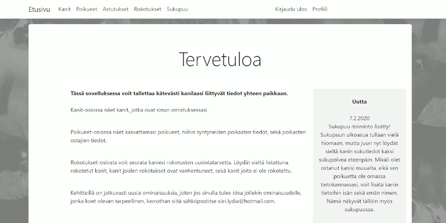

I had already been working on this project for a while during my studies in AW Academy. I knew that
rabbit breeders need to keep track of their rabbits, litters and people who buy the rabbits.
I wanted to give them a simple solution which could be used by young and older people as well, and which
could be used with mobile and PC.
During my studies I had already hosted everything on Azure and after my graduation I continued to work on this project. I added a few main functionalities and user authentication. After this came the moment of truth - I had to get a handful of people to test it.
During my studies I had already hosted everything on Azure and after my graduation I continued to work on this project. I added a few main functionalities and user authentication. After this came the moment of truth - I had to get a handful of people to test it.

My thoughts
It felt nice to work on a project while knowing that there is an actual demand for it. It brought me a lot of motivation. I worked on this independently, knowing that I am fully responsible for everything. It was also quite exiting to get actual users to use this for the first time. After that I continued to work on the project, adding new functionalities based on the feedback I got.
I feel that I got a decent idea of what it's like to develop this kind of programs and especially of the information security side of it all, which had to be taken seriously. I used Auth0 for the authentication, which was surprisingly easy. Editing the database and API was a little troublesome at first, but I quickly got the hang of it and was able to do it with a routine.
A few highlights of this project:
It felt nice to work on a project while knowing that there is an actual demand for it. It brought me a lot of motivation. I worked on this independently, knowing that I am fully responsible for everything. It was also quite exiting to get actual users to use this for the first time. After that I continued to work on the project, adding new functionalities based on the feedback I got.
I feel that I got a decent idea of what it's like to develop this kind of programs and especially of the information security side of it all, which had to be taken seriously. I used Auth0 for the authentication, which was surprisingly easy. Editing the database and API was a little troublesome at first, but I quickly got the hang of it and was able to do it with a routine.
A few highlights of this project:
- I got a good understanding of making MVC apps and using Azure
- My first experience in having actual users for my program was a little intimidating
- I implemented user authentication for the first time ever
- An app with a true demand for it brought me a lot more motivation than just working on exercise tasks